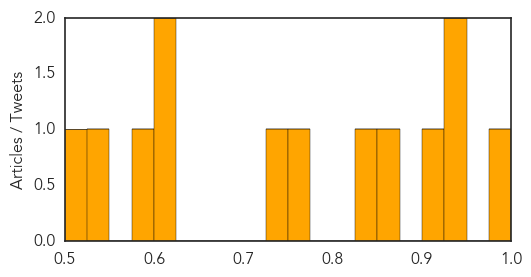
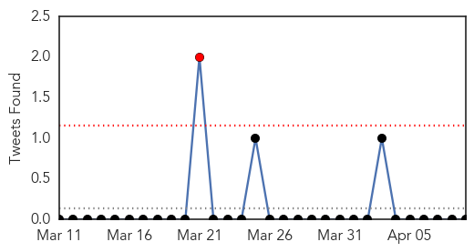

Influenza
30-Day Web Trend
0 alerts, 0 warnings

30-Day Twitter Trend
1 alerts, 0 warnings

Article Locations
Article Confidences
Top Articles:
- 0.984
- Abu Dhabi resident diagnosed with MERS virusUAE
- 0.945
- Scientists say UK wasted £560m on flu drugs that are not proven
- 0.933
- Review raises questions about Tamiflu
- 0.902
- Tamiflu drug 'largely ineffective' in reducing hospitalisation
- 0.852
- Study casts doubt on Tamiflu value
- 0.831
- Government's £424m stock of bird flu drug ‘not fully effective’
- 0.756
- Risk of Food Poisoning Twice as High in Restaurants, Safety Alert Says
- 0.747
- Restaurants Pose Twice the Risk of Foodborne Outbreaks as Homes, CSPI Data Show
- 0.619
- Researchers, regulators and Roche row over stockpiled drug Tamiflu
- 0.602
- New clues to why RSV sends babies to the hospital
- 0.577
- Flu Drugs Challenged in Full Data Review
- 0.532
- Row erupts over influenza drug Tamiflu › News in Science (ABC Science)
- 0.502
- UNC researchers find genetic trigger for RSV-induced infant hospitalizations
Top Tweets:
-
No tweets found for Apr 09, 2014
Swine Flu
30-Day Web Trend
0 alerts, 0 warnings

30-Day Twitter Trend
1 alerts, 0 warnings

Article Locations
Article Confidences

Top Articles:
- 0.997
- Washington State Sea Otters Infected With Human H1N1 Pandemic Virus
- 0.975
- Researchers question Tamiflu's effectiveness in treating the flu
- 0.952
- Review questions effectiveness of anti-viral flu drugs
- 0.943
- Ministers blew £650MILLION on useless anti-flu drugs
- 0.863
- Tamiflu: Millions wasted on flu drug, claims major report
- 0.833
- Tamiflu's effectiveness in cutting flu hospitalizations questioned
- 0.631
- Tamiflu: Britain spent £424m on a drug that shortens bouts but is no cure
Top Tweets:
-
No tweets found for Apr 09, 2014